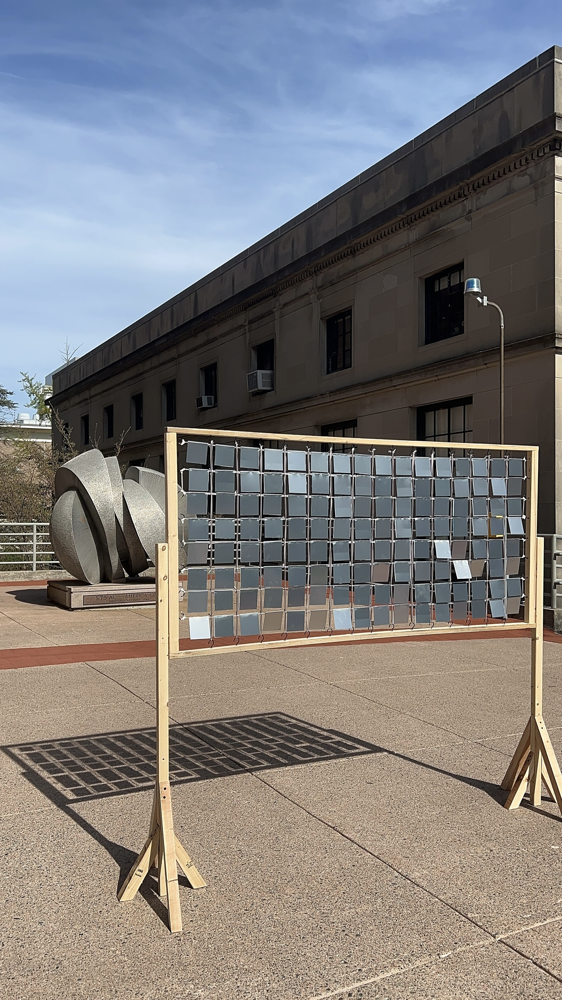

Where the Wind Dwells
Wood, Aluminum Sheet, Ribbon, 2025
Inspired by Ned Kahn's Wind Veil and Madolin Maxey's River Dart (2011), this kinetic installation uses 128 suspended aluminum panels to visualize wind flow through varying Reynolds numbers that create different panel displacements. The technical design demonstrates fluid engineering principles as wind patterns fragment and reassemble the painted landscape, with small Reynolds numbers producing subtle movements and large numbers creating dramatic shifts. Constructed with a wooden frame and ribbon web, the piece functions as both artistic expression and scientific demonstration of flow visualization.